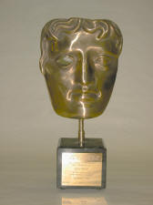
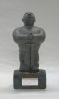
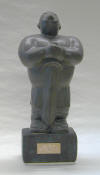
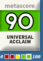
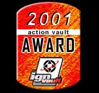
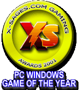
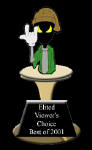
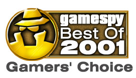

|
Max Payne has received many awards since it's release. Here's a
summary of some of the more notable ones (in no particular order).
These awards are for the PC version of the game unless specified
otherwise.
Best PC Game
- BAFTA - (British Academy of Film and Television Arts)
'The Matrix'
meets 'Dirty Harry' in this gritty tale of cops, mobsters and revenge,
played out across a contemporary New York city. A well-woven plot moves
the genre forward, while the addictive 'bullet time' feature sends Max
and the player's worlds spinning in slow-motion.

Best
Action Game of 2001 - finalboss.com
The website finalboss.com awarded Max Payne
winning awards in several categories. Their web site is not in
English, and as such, I cannot quote anything here, but you can check it
out if you'd like. :) In addition to the award above,
Max Payne also won these awards from finalboss.com..
- Best
Screenplay
- Best Graphics
- Revelation Of The Year
- Best Game of the Year
Best Game
Cinematography Award of 2001 - EuroGamer "Gaming Globe" Reader
Awards
With a combination of spectacular cinematic
in-game action, occasional real-time rendered cutscenes and over-the-top
comic book style interludes between missions, Max Payne's approach to
storytelling was certainly eye catching. Once again Max's fans voted it
to the top of category, despite tough competition from the likes of
Capcom and Square.
Best Game
Character Award of 2001 - EuroGamer "Gaming Globe" Reader Awards
An undercover cop caught up in a conspiracy involving bent cops,
mysterious corporations, designer drugs and even the odd bit of Norse
mythology, Max Payne emerged from his New York fifteen minutes as the
most popular video game character of the year. And with a habit of
leaping through the air in slow motion while firing dual berettas John
Woo style, not to mention a script that could have come from a (really
bad) film noir and an array of bizarre facial expressions the likes of
which we've never seen before, is it any surprise? No, don't answer
that, it's one of them, how'd ya put it, rhetorical questions.
Best
Innovation Destined for Overuse - Computer Gaming World
Computer Gaming World awarded "Bullet Time" with their 'best
innovation destined for overuse' award. See the pic to your right
for a larger version of the award received at Remedy HQ.
Readers Choice - Best Game of 2001 - Pelit Magazine
Best PC Action Game of 2001 - Pelit Magazine
Pelit Magazine (the biggest Scandanavian magazine) gave Max their
"Reader's Choice - Best of 2001" award and their Best PC
Action game of 2001. They sent a couple of actual awards
to Remedy HQ - click on either of the thumbnails here to see a larger
picture of the award.


Editor's Choice Award (Xbox) - Xbox Maniacs
This
game is a genuine, one of a kind. Expect to see copied versions of
bullet-time in the future. If you already bought this title for PC,
don't buy it for Xbox because it is basically the same except for faster
loading times. Otherwise, this is a must have title.
Metascore 90 - Universal Acclaim - Metacritic
 No words can
describe this game. It is a cross between the Matrix and Die Hard. This
game is the best I have ever seen. Download the demo and see for
yourself.
It looks simply unbelievable, the gameplay and control is easy and
intuitive, and the bullet time makes it the premier action game on the
PC.
Metascore 90 - Universal Acclaim (Xbox) - Metacritic
Playing
through Max Payne for the first time is a little like watching Pulp
Fiction for the first time: Five minutes after the opening credits you
know it’s awesome, and you don’t want it to end.
The sounds of Max Payne double the intensity of the game. From the
beginning monotone opening to the deadpan, and deadly noirish
conversations that Max has with the enemies, the game is a treat for the
ears as well as the eyes.
Best Game of 2001 - Electric Playground
At
this stage, it's hard to find something to say about Max Payne that
hasn't already been said about a gazillion times. Even people living in
caves have heard that the graphics are fantastic, how cool Bullet Time
is... Max Payne did for action games what John Woo and Chow-Yun Fat did
for action movies. It was one of the few games that was hyped from the
very beginning and didn't land with a thud. And on the net, the fans are
even doing creative things with the included level editor. This title
sparked some serious "I want to review that one" arguments around the
office. The end credits promise a sequel. Already I drool in
anticipation.
Best PC Action Game
- Electric Playground
Tough
call here, but Max gets the edge for originality. And Bullet Time. Who
would have thought that a feature that slowed a game down would be so
brilliantly cool? Don't forget that it's also a sophisticated piece of
programming, one that can track every piece of buckshot from a shotgun
blast, every shell casing from a machine gun, and every hole caused by
every bullet. When you survey the damage caused by a battle, you feel
like you caused major mayhem. Despite the graphic intensity, the games
quickload feature was faster than a jackrabbit on crystal meth. Max
Payne may be one long running gunfight, but this game has more style
than five games put together.
Best Graphics in a PC Game - Electric Playground
Aside
from the title character's perpetual "who farted?" expression, Finnish
developer Remedy knew what they were doing when they hand-crafted the
exquisite graphics engine that drives the John-Woo-meets-Martin-Scorsese
bullet ballet that is Max Payne. "Photorealistic" is a descriptor that
gets abused more than John Tesh fan at a Slipknot concert, but Max Payne
went a long way towards convincing us that the line between videogames
and Hollywood films really is getting a little blurry.
Editor's Choice Best Action Game (Xbox) - Game Revolution
The first really beautiful Xbox port of a PC game, Max Payne shows
off the power of the system in frightening detail.

Best Adventure Game (Xbox) - IGN
Grab
two pistols, your leather coat and the hottest special effect of the
21st century, Bullet Time, and you're ready for the adventure of a
lifetime with Max Payne. Since we're keeping track this is likely the
third best port, PC to Xbox, for the system in 2001. But Xbox gamer's
weren't missing any part of the Max Payne experience on the Xbox. Ass
kicking your way through the New York City underworld dealing street
justice at will is the kind of adventure everybody expected from the
Xbox. Max Payne delivers with some double-barreled fun.
Best Xbox game of 2001 - Gamespot
After more than three years in development, the world was
pleasantly surprised with this original shooter that surpassed
expectations with its innovative gameplay mechanics and cohesive style.
The game's use of bullet-time, an effect that momentarily puts the
action in slow motion, serves as both form and function. Using
bullet-time, any of the games innumerable firefights feel as though they
were pulled straight for a John Woo action movie, and adds an
interesting twist to what would have otherwise been a pretty
straightforward shooter.
Editor's Pick
- Head to Head Gaming
It's
tough...i think it's certainly the best 3rd person action shooter of all
time, but best PC action game of all time? It's certainly the biggest
and best game since Half Life in my opinion (maybe with the exception of
Deus Ex)...and you know what? I think if someone asked me right now what
the greatest action game of all time on a PC was, i'd probably say by
instinct that Max Payne was up there. You never know the games you're
forgetting when you say that though...one is always treading on thin
ice. Ahh well, to hell with it. It's damn good. And it gets our H2H
Pick!
Seal of Approval - Angry Gamers
You may hear allot of crap thrown at this game for being too short
by pansy ass reviewers who whine about it for a few paragraphs and then
give the game five stars or a 90% or 4.5 damaged brains or whatnot
anyway. I think this is really a good thing - better to end the game on
a high note (like Seinfeld or Cowboy Bebop) rather than drag it on far
longer than need be for a few extra bucks (like the X-Files or John
Travolta). In any case, I never found the lack of play time a problem.
If you do, then we have a difference of opinion and must agree to
disagree. Or battle to the death. Either way is good for me.
Please, go buy Max Payne. It has guns, terrible acting, slow motion and
dead babies all rolled up into one. Kind of like my high school prom -
but without the severe emotional scarring.
Computer Game of the Year
- Augusta Chronicle
Max Payne from GOD Games gives you a great story and superb
graphics, and is one of the more innovative games on the market. One of
its greatest features is the ability for our hero to leap through the
air (in slow motion) while blowing away the bad guys -sort of like a
poor man's Matrix.
Life Sentence Award - Tweakers Asylum
 One
thing you won't find in Max Payne is a multiplayer mode, but don’t let
this sway your opinion of this great game. It’s probably better off that
it has no multiplayer mode, because I don’t think there would be any way
that bullet-time would fit into it. But, the game does ship with it’s
own editing tools, so I’m sure you will be seeing lots of user made
single player MOD’s for this game. One
thing you won't find in Max Payne is a multiplayer mode, but don’t let
this sway your opinion of this great game. It’s probably better off that
it has no multiplayer mode, because I don’t think there would be any way
that bullet-time would fit into it. But, the game does ship with it’s
own editing tools, so I’m sure you will be seeing lots of user made
single player MOD’s for this game.
As you can see I love playing this game. It is a non-stop adrenaline
rush throughout the whole thing. It has a unique style of game play, a
great story, and I know that I will be playing through this game more
than once.
So if you have an $50 laying around, or if your bored and have nothing
to do, go out and pick up a copy of Max Payne, I promise you, you will
get hooked.
Pick
Award - Geek.com
At
first blush Payne is the antithesis of Geekness: he's cool, he's cold,
he kills people. The game, too, doesn't seem to offer a lot of neato
Geekisms. There's no multiplayer and, truly, it's not a very complex
game. But then you come to the very cool cinematic shots and Bullet
Time, which just plain old rocks. Throw in the fully-interactive
background and Max Payne truly earns 4.5 Geekheads for Geekness.
Hot Award
- Game Sector
This award is not in english, and as such doesn't have any text we
can use to quote here. :)
Editor's Choice
Award - IGN
Well, as you can tell, I was pretty damn happy with Max Payne.
It's got plenty of style, and enough action to have you hopped-up on
adrenalin for hours after playing, leaving you saying, "I can take more
Payne. Give me more! More!" It's not deep, but Max Payne is more than a
satisfying experience the whole way through, and it's a title you
absolutely must not miss if you're an action gamer. Max Payne, you are a
delight.
Gamers
Choice Award (Xbox) - Gamesdomain
If you havent already, go out and get this game for your Xbox, Its
well worth the money and the time to play it through on every difficulty
level.
Highly Recommended
Award (Xbox) - Gamesdomain
Max
Payne on Xbox is an excellent game. It seems to be improved for being on
a console - third person games have always worked better with a decent
gamepad, and this one is no exception. Maybe the movie-like ambience of
the scenery is more at home on a big TV. Whatever the reason, it just
feels right. It loses the tedious load times of the PS2 version, and
gains a save-anywhere function into the bargain - a big improvement. Max
Payne achieves perhaps the highest honour a port can manage - it's an
improvement over the original.
Editors Choice Award - Gaming Excellence
The highly anticipated Max Payne is finally available, and it was
sure worth the wait.
Award
for Excellence - Wargamer
To put this as simply as possible, Max Payne is the best crafted
and polished 3D action shooter to ever be released. The game delivers on
every fancy feature, and completely engrosses the gamer with
intoxicating gameplay. This is a must have for any action gamer.
Max Payne is perhaps most widely known for a feature the
developers modeled into the game after a few too many sessions watching
The Matrix. Calling it “shoot-dodging” and “bullet-time,” the developers
modeled a slow-motion effect that not only is an amazing feature, but
also is utterly critical to completing the game. These related features
allow the player to dramatically slow time, giving Max a serious
advantage over his enemies. Although Max’s actions are slowed along with
everyone else’s, the slowing of time makes aiming substantially easier.
This is crucial to the game because dodging bullets, shooting enemies
and aiming properly is particularly cumbersome at full speed.
Intelligent
Choice Award - Intelligamers
For any real fan of action movies or action games Max Payne is
simply a must buy title, assuming your gaming rig is reasonably state of
the art. It's blend of innovative action sequences, generally
exceptional level design and enemy AI, and top notch, gritty film noir
story telling make it the stand-out action game of 2001 so far.
PC Game of the year
- Game Reviewers
Max
Payne brings the synthesis between gaming and movies one giant leap
forward. The current trend of games is to bring players inside of a
story. Games like Deus Ex showed that shooters can have a story and RPG
elements. The shooter genre is headed towards a more complex game
experience which includes decision making, story lines, plot twists and
awesome graphics. All these elements can make a player feel like they
are ‘starring in their own movie’.
Max Payne's use of the slow motion action sequence adds one more movie
element to video games. The slow motion effect, so long a part of modern
action movies, has finally hit the gaming industry. The gritty character
and story line of Max Payne add to the full cinematic feel of the game.
The slow motion innovation combined with an action shooter which is
driven by a truly gritty story line is enough to earn Max Payne my vote
for Game Of The Year.
Best
Action Game 2001 - Joystick Review
When
making the evaluations for the Action Game of the Year Award one game
kept coming back to mind: Max Payne. Why did we choose Max Payne for our
Action Game of the Year? Features like graphics and 'Bullet time'
enabled Max Payne to virtually rip the trophy from ours hands, as it
emerged as our runaway favorite for 2001.
Max Payne's novel cinema-realistic graphics are simply stunning. No
where have we seen this level of detail in an action game engine. Crisp,
lifelike, and of course, intense - pretty much sums up our thoughts on
this game. Make sure you have enough system, because you'll need it.
How cool is Bullet time? Try watching a bullet whiz through the air in
'Bullet time' and tell me if Half Life just doesn't seem the same,
anymore. 'Bullet time' adds a whole new dimension to the shooter and
makes everything else seem a little, well, dull. 'Bullet time" is to Max
Payne what John Woo is to action films - very cool.
Like a good roller coaster, Max is fast and furious and when the ride is
done you don't want to get up - you just want more.
PC
Game of the year
- Action Vault
 Although
many gamers were eagerly anticipating its release for quite some time,
Remedy's and 3D Realms' Max Payne proved to be a title that was worth
the wait. Set in the gritty, urban environments of New York City, it
casts players as a hard-boiled cop seeking revenge against those
responsible for his family's murder. One of the most prominent aspects
that set Max Payne apart from other titles was its use of bullet time
and other slow-motion effects. This made possible a style and finesse of
shooting never before seen in a game. On top of this, it featured a
story-driven adventure cleverly highlighted by graphic novel cutscenes,
stellar graphics that were at times photorealistic, and a strong
protagonist. It all adds up to an experience that makes Max Payne worthy
of Action Game of the Year.
Character of the year
- Action Vault
Borrowing
certain qualities from influential action movies of the recent past, Max
Payne is a character that was carefully designed from the ground up.
Remedy and 3D Realms meant for him to stand alongside popular icons such
as Duke Nukem and Lara Croft, which he does. Due to the loss of his
family, Max is naturally a hard-nosed, edgy character who places little
value on life. He has the appearance of a modern anti-hero, with a gun
in each hand, dark razor-like hair, stern facial expression and trench
coat billowing behind him. His future has also been well mapped, as a
sequel seems a certainty and a movie starring the cop turned vigilante
is in the works. Above all, there was something intangibly cool about
the character and his style of action that made him and the game the
success they were in 2001.
PC
Game of the year
- Gamezone
“The game is absolutely and genuinely unique. Its only major
shortcoming is in its bathetic presentation: it comes off as a B-movie
at times when it seems the developers wanted it to come off as an
A-movie. If you think about it, though, that’s hardly a shortcoming:
it’s a game that comes off as a B-movie among a multitude of games that
only wish they could come off as any kind of movie at all. It’s really
quite an achievement; it’s a mixture of standard story-art qualities
(plot/momentum, story, scene balance, character) and standard computer
game qualities (bug-free technological excellence, top-notch graphics,
compelling sound production, gameplay and interface innovations, editor
tools, replayability).”
Readers
Choice Award - Best
Use of Sound
- IGN.com
We've heard some people say that the voice acting in Max Payne was
too "acted". Well we think they're insane and apparently so do you. The
voice of Max himself and most of the others in the game may have been
over the top in some spaces, but that's what made it so darn brilliant
and fun. Max's deadpan, depressed, and angry way of speaking set the
stage perfectly for the urban western that had Vengeance as its middle
name. And that's just Max. There were so many places in the game where
you could wait around a corner and listen to gangsters have a
conversation or hear a soap opera playing on an abandoned TV. There were
so many ways this game did things right and the sound is just one fine
example of that.
Readers
Choice Award - Best Storyline of the
year
- IGN.com
The vengeance thing is big in the world of good stories it seems,
because Max Payne packs it in and keeps it rolling with little twists
and turns the whole way through. Max's wife and child have been murdered
and he's gone vigilante killing everyone and everything that keeps him
from learning the truth behind his family's death. The fiction is built
beautifully and darkly throughout the game as things get more and more
twisted with each passing scene. Comic book style interludes with news
breaks on TV and the radio work extremely well to drag you down into the
depressing and dirty world of Max Payne.
Readers
Choice Award - Best Graphics of the
year
- IGN.com
I've heard very little to no complaint about any of the visuals
coming from this Swedish born action shooter. It had everything from the
solid modeling to the weapons effects. Seeing individually modeled
bullets and shells flying around with reckless abandon was really
amazing. But where this game really came across strong in the looks
department were the textures and the lighting. They combined to create
an amazing atmosphere that helped suck you into the shoes of that woe
begotten renegade cop Max Payne.
Readers
Choice Award - Game of the
year
- IGN.com
This is another game that exceeded our high expectations.
Jam-packed with style and detail, this gritty film noir crime story
definitely showed many Hollywood influences. It's like playing in your
own action movie (complete with a disturbing comic strip about a weird
looking kid and a bat). This game garnered so many votes from the
readers that we almost decided to create a new Best Max Payne game of
2001 category.
The Best of 2001 - PC
- Game Revolution
It
took a while, but Max Payne finally showed us all why we were so excited
for so many years. A great mood and outrageously fun gameplay made for a
memorable experience. And was there a cooler gaming innovation this year
than bullet-time?
Reader's Choice Single Player Action Game of 2001
- Gamespot
After installing the
game and practicing my Matrix-style cinematic stunts in the training
area, I felt like this was not like any ordinary third-person shooter. I
knew there was something a little deeper inside. There's a story behind
the game, the effects are great, you have some nice guns, and there are
plenty of people to shoot. What more do you need?"
Reader's Choice Game of 2001
- Gamespot
"The best-looking
video game ever made! I do not say that lightly. I have been a hard-core
gamer since the late '70s. The graphics in this title are beyond
amazing. If I wasn't caught up in the action I would probably just stare
at the screen whenever I hit the bullet-time button. John Woo meets the
Matrix for the most amazing effects yet created for the PC."
Videogame of the
year -
X-Sages.com
 Max
Payne was a long time coming. Oh, we saw glimpses of it and were told
about its greatness every now and then, but we gamers have heard this
type of hype before. Would Max Payne meet the hype? The quick answer?
Yes!
Max Payne represents a new level in first person shooters. It
comes with a fantastically penned storyline that is excellently voiced.
The plot is believable and totally engrossing. As Max Payne you play a
cop who lost everything to a bunch of drug addicts hooked on the newest
designer drug. Max goes undercover to find the source of the drug but
when his cover is blown, and the only contact in the force who can prove
what side of the law Max on is murdered, Max finds himself wanted by the
cops and hunted by the drug cartel. What is a max to do? Go Vigilante in
the biggest sense of the term of course!
Max hunts his enemy through incredibly detailed worlds that are so
real that they are downright depressing. Abandoned warehouses, shattered
lives, and more enemies than a single man could possibly deal with. More
than a single man can deal with that is, until you activate "bullet
time." Oh yes, you saw and loved it in the Matrix - and you will love it
in Max Payne. With bullet time Max Payne goes from being a man without
hope, to a man with a fighting chance!
Everything about Max Payne is perfection. Using Bullet Time - the
slow motion action shots generally reserved for action movies - and
combining it with the action of a John Woo film, bullet dodging of The
Matrix, and the tantalizing plot of a film Noir, Max Payne created a
blend that previous action games lacked. Oh yes, Max Payne lived up to
the hype and more and is well deserving of the Windows Video Game of the
Year Award 2001!
 Best Action game of the
year
-
Elited.net
Best of 2001, this says a lot for the developers that
took the risk of making a single player game that has third person view
only. Max Payne is a pseudo-realistic type game, with the attention to
each minute detail. Click a button on the soda machine and a soda falls
out, shoot the can and it spews soda and flips around. Things like that
add to the realism. Bullet time (slo-mo) and bullet dodge were unique
features added to this incredible game. The game learns your ability and
adjusts accordingly, how many games do that? Max Payne is worthy of Best
action game of the year hands down.
Best single player Action game - Gamespot
Like
many of the other games that were released this year, Max Payne
experienced its fair share of delays leading up to its release. It was
being developed at Finnish studio Remedy Entertainment for well more
than three years, and that wait was made much harder by now-defunct
publisher GodGames' tight clamp on all things Max Payne--the company
released scarce few screenshots and gameplay details to a gaming public
hungry to learn more about the intriguing game. So it was with a certain
degree of surprise that we found Max Payne to be not only a superlative
third-person shooter, but also one with a long-touted and extremely
enjoyable "bullet time" feature. This slow-motion effect certainly isn't
anything new--it's been made famous in a number of action movies like
The Matrix--but Max Payne marked the first time that such a technique
had been successfully executed as part of an action game. So much so, in
fact, that Max Payne looks remarkably cinematic, even though it plays
great. Certainly, the homage that it pays to its cinematic source
material is clearly evident in everything from the game's pacing to the
selection of visceral weapons available. The end result is a shooter
that's almost as much fun to watch as it is to play.
Max Payne isn't just a mindless action game with a slow-motion novelty.
The game tells the tale of a rogue cop on a mission to clear his name
and avenge his family, using a series of still images that were done in
the style of graphic novels. The plot is narrated with great, albeit
melodramatic, voice acting as well. The extra effort that Remedy
Entertainment put into development is plainly apparent in Max Payne, and
ultimately, the game was well worth the wait.
Best PC Game of 2001
- Amazon.com
Gamer's Choice - PC Action Game - Gamespy
Max Payne, without a single doubt in my mind. Payne actually
delivered what it promised; it put you inside of an action movie, had
nonstop excitement, and was fun as hell.

Best
Gimmick of 2001 - Gamespy
In the meantime, while Neo is learning that there is no spoon, I
wanna dodge bullets. I wanna leap through the air in slow motion, do a
spin move, head-fake some 9 mm badness and dish out my own Smith &
Wesson lovin'. And the closest thing to that right now is Max Payne's
unique "Bullet Time" feature, which wins our award for Best Gimmick.
Max Payne wasn't the first game to offer a "Bullet Time" experience
(that award goes to the game Requiem), but Max Payne's version is so
damn fun, it's sure to become a must-have feature for shooters and
even other genres of games. Like its Matrix namesake, Bullet Time
allows you to slow the game's action down to a crawl, allowing you to
see each bullet, each pellet of buckshot and each hunk of shrapnel as
it flies through the air. Your reflexes, though, remain at normal
speed, so the slo-mo effect allows you to take in the entire scene and
carefully choose your actions, while at the same time pumping the bad
guys full of lead.
The overall effect is
strangely like a breath of fresh air, or like a John Woo movie without
the white doves. Bullet Time adds tactics to your run-and-gun mayhem.
Instead of twitch, twitch, twitching your way to victory, you can slow
down and pick your shots for maximum effect. Look around, shoot the
bad guy behind the door, duck, perform some Olympic-quality
acrobatics, sprint across the room and then nail the other guy right
between the eyes.
Best
Ingame Cinematics - Gamespy (Runner Up)
Let's start with Max Payne, the hardcore undercover cop who's
been doublecrossed one too many times. The film-noir plot was fed to
us partly through graphic-novel like panels, but also through in-game
cinematics featuring Payne's gravelly inner-monologue. He discovered
and commented on things as we discovered them, and the dialogue with
the other characters was appropriately hard-boiled (okay, admittedly a
little campy.) The result was the perfect mix of suspense to fill in
the gaps between the crazed action sequences and slow-mo gunfights.
Best Movie
Trailer - Gamespy (Runner Up)
Max Payne played in many ways like a blockbuster action movie,
so the material seemed to lend itself pretty well to a movie trailer.
The Max Payne game trailer set itself up like a motion picture
trailer, giving us slow introduction credits and a voiceover that
explains the gist of the story.
The movie had plenty of quality material to work with once the action
starts, though. We're treated to scene after scene of Max dodging
bullets in slow motion and mowing down the baddies by the dozen.
Dramatic explosions, crumbling buildings, blazing gunfire, and narrow
escapes all thrill us throughout the entire movie. Everything looks
great, just like it does in the game. The only thing missing is some
of Max's signature dialogue. But you have to leave something for the
game, right?
Third
Person Game of the Year - Voodoo Extreme
After
around four years of waiting, Remedy along with 3D Realms released its
gritty film-noir inspired third person action shooter amidst a flurry
of high profile online media coverage. In many ways, Max really
delivered an outstanding single player gaming experience. Sure, the
story was goofy at times and it was a tad on the short side, but the
graphics were killer and the bullet-time themed gameplay really kicked
ass. It might not be game of the year, but it was defiantly the game
of the moment. It's also a pretty damned solid Xbox title to boot.
2001
Game of the Year - Voodoo Extreme
Max Payne
(3628)
28%
Halo (3192)
25%
Dark Age of Camelot (1562)
12%
Civ III (1436)
11%
Grand Theft Auto 3 (1259)
10%
Metal Gear Solid 2 (870)
7%
Smash Bros Melee (378)
3%
Star Wars Rogue Leader (285)
2%
Dead or Alive 3 (159)
1%
Total Votes:
12769
|
2001 PC Action Game of the Year - Voodoo Extreme
Max Payne
(2490)
34%
Return to Castle Wolfenstein (1845)
25%
Operation Flashpoint (728)
10%
Aliens v Predator 2 (421)
6%
They all suck (382)
5%
Ghost Recon (274)
4%
Serious Sam (264)
4%
Tribes 2 (225)
3%
Undying (159)
2%
Blade of Darkness (130)
2%
Red Faction (94)
1%
Other (90)
1%
Oni (53)
1%
World War II Online (50)
1%
BattleCruiser Millenium (47)
1%
AquaNox (24)
0%
HL: Blue Shift (23)
0%
Hostile Waters (21)
0%
Project Eden (11)
0%
Total Votes:
7331 |
Best of 2001
- Fragland
This game brought back something we had all almost forgotten :
The Single Player Experience. Max Payne gave us something we never
thought we would play again : a single player game with great
gameplay, story, graphics and features.
PC Game
of the Year - Shacknews
The winner (1351 votes):
Max Payne. Ah how we all laughed at the seemingly slow
development process, when it was finally released it was well worth
it. With its bullet time gameplay, and its gritty urban setting,
Remedy showed us that third person shooters on the PC could actually
compete with first person shooters.
Seal of Excellence - Adrenaline Vault
Max
Payne is one of those memorable titles that people will be talking
about for years to come. Its impressive graphics, gripping storyline,
and fun use of Bullet-Time action elevates the game to the current
standard that most others should aspire to. While it would have been
great to see a multiplayer component to accompany the single-player
action, the single-player is handled nicely, with no sacrifices made
that would lower the overall quality. As one of the last products to
come out of the respected Gathering of Developers, Max Payne is a
quality release that marks the end of an era, and serves as a
benchmark for great games to come.
Platinum Heart Award - Gamers Pulse
Max Payne is not a perfect game (no
game really is) but is easily one of the best games to come out in
recent memory. If you are even remotely interested in the genre or
game style pick this game up and settle in for a good long gaming
session, because once Max Payne has you in his sights, it is damn hard
to shake him.
Best PC Game of the Year - ECTS Visitors Award
Platin Award - 4 Gamers (in German)
PRINT MAGAZINE AWARDS CGW -
"EDITOR'S CHOICE" HONOR
The Nov. 2001 issue of Computer Gaming World contains a glowing review
of Max Payne.
PC Gamer (USA -- Oct. 2001 issue) "PC Gamer Editors' Choice" - Rating:
90% MikroBitti (FIN -- Jan.2002 issue) "Game of the Year" PC Jeux "Jeu
du moi" (Game of the month)" PC Team "PC Team trophée" Gamestar "Besondere
Innovation" (Special Innovation) PC Action Gold Award Game On! Top
of the Game On! Gamesmania.de "Award of Excellence" Gamesweb.com
Award Gamesweb Gameszone.de Gameszone Award Gamigo.de Award Gamigo
PC Games "Spiel des Monats" (Game of the month) PC Gamers Game of the
Month Award PC Format Gold Award PC Zone Classic Award
|
|
{kind=link}
{kind=link}
{kind=link}